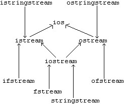

The Design and Evolution of C++ 阅读记录¶
约 6719 个字 164 行代码 1 张图片 预计阅读时间 24 分钟
Abstract
阅读 Bjarne Stroustrup 的 The Design and Evolution of C++ 过程中的一些摘录。
在阅读时，我会更注意语言特性的设计和发展历程、相关的设计哲学之类的内容，而会比较少地关注已经熟悉或者未来会系统学习的语言特性本身。
前言¶
C++ 和造就它的设计思想、编程思想自身不会演化，真正演化的是 C++ 用户们对于实际问题的理解，以及它们对于能够帮助解决这些问题的工具的理解。因此，本书也将追溯人们用 C++ 去处理各种关键性问题，以及实际处理那些问题的人们的认识，这些都对 C++ 的发展产生了重要影响。
0 致读者¶
……一个通用程序设计语言必须同时是所有这些东西，这样才能服务于它缤纷繁杂的用户集合。
一种通用程序设计语言必须是折中主义的，需要考虑到许多实践性的和社会性的因素。
第一部分¶
Abstract
这部分描述了从 C with Classes (1979) 到 Release 1.0 (1985) 的历程。我读完这一部分得到的收获是：了解了 C++ 设计和发展的一些规则和哲学，了解到了一些特性诞生的原因和过程，理解了那些规则对于 C++ 发展的影响，以及对于「C++ 解决什么问题」这个讨论的影响。
1 The Prehistory of C++¶
1.1 指出，Simula 的类和协程机制给出了好的表达能力，在此基础之上的类型检查等使得错误更易排除。但其构建和运行表现很差。这使 BS 发誓「在没有合适工具的情况下绝不去冲击一个问题」。
1.2 提到 C 语言是 BS 比较欣赏的系统程序设计语言。
Quote
尊重人群而不尊重人群中的个体，实际上就是什么也不尊重。(P25)
2 C with Classes¶
2.1~2.3 诞生¶
2.1 指出，BS 遇到了「在没有合适工具的情况下绝不去冲击」的问题。鉴于 1 中提到的原因，他设计了一个预处理程序 Cpre（1981/12 首次发布），来将 C with Classes 处理成 C。此后也从思考一种 工具 发展成了思考一种 语言。
- C with Classes 和 C++ 的「class」来自 Simula。
- 设计的 private 和 public 是 compile-time access control
- 和 C 一样，对象分配有 3 种形式：在栈上的 automatic stroage，在固定地址的 static storage 和在堆上的 dynamic storage
2.4 效率¶
- Simula 的 class type 的对象都是 dynamic allocated 的，这是 Simula 慢的重要原因。
- C with Classes 希望让对内部类型的支持也能用于自定义类型。事实上，C++ 现在对自定义类型的支持比内部类型还多。
- C with Classes 初始版本没有 inline，但是很快就加上了，因为如果没有 inline，getter 和 setter 之类的函数有额外代价，人们就不会愿意封装。
- C with Classes 中只有函数体放在 class 声明中的成员函数才能被 inline。
- C with Classes 直到 C++ 的一条设计规则是，如果要引入一个 feature，需要有立即的、普适的 affordability。
- 关键字
inline和允许非成员 inline 函数都是后来 C++ 提供的。inline只是个提示。
2.5 链接模型¶
2.5 指出，C 和 C++ 都是按名等价的，但 layout capability rules 允许了 low-level 的强转。这也发展出了 C++ 的 one definition rule，即 func, var, type 等的定义均应唯一。
C with Classes 的对象结构和 struct 一样，函数不在其中。
this 来自 Simula。当时 C++ 还没有引用，因此是个指针。
2.6 静态类型检查¶
2.6 讨论了静态类型检查。早期 C with Classes 试图禁止 narrowing implicit conversions，但是失败的很惨，因为大家都这么用。于是 BS 选择使用 warning，但是对于 int->char 这种过于常用的转换，不报 warning。他希望 warning 只用在「有超过 90% 的可能是捕捉到实际错误」的情况。
2.7 为什么是 C¶
2.7 指出了构造在 C 之上的一些理由。例如其灵活（通用）、高效、各种平台都有 C 编译器、可移植。他指出了一些灵感来源： Simula 提供了 class，Algol 68 提供了运算符重载、引用以及可以在块中任何地方声明变量的能力，BCPL 提供了 // 的注释形式。
他指出，希望 C++ 一方面能够像 C 一样接近机器，另一方面又能接近需要解决的问题。
1985 年之后，C++ 受到了来自 Ada 的模板、异常、namespace，以及 Clu 和 ML 的异常的影响。
2.8 语法问题¶
2.8 提及了 C 语言语法的缺陷是否有被解决。BS 指出他试图修改省略类型描述符并默认为 int 的语法（例如 f(); 表示声明一个返回值为 int 的函数 f），但是遭到了反对，就退了回来，直到十年后标准反对了这种写法。BS 还指出他试图修改 C 语言「让名字的声明模仿其使用」的语法（例如 int *p[10];, int (*p) [10]），但是最后没改。
他同时提及了 C with Classes 希望让用户定义的类型不是二等公民，所以在向 C++ 演化时 class, union, struct 的名字前面不再需要加这些语法标识符了。带来的一个问题是，struct S {int a}; int S; 这样的东西在 C 中是合法的。为了保持兼容性，C++ 的解决方案是，一个名字可以同时指称一个 class，同时也可以指称一个 var / func；但是如果确实同时指称了这两种，那么除非显式加了关键字 class, union, struct，否则指称的是那个 var / func。
2.9 派生类¶
C++ 的 derived class 和 Smalltalk 中的 sub class 的概念都来自于 Simula，不过 BS 认为 derived/base 相比于 sub/super 更容易理解。
C with Classes 最初没有虚函数，因此没有任何形式的运行时支持。也没有模板，因此想实现容器等类型泛型时，采用宏来实现。这里 有一篇相关的文字。
2.10 The Protection Model¶
保护的单位是 class。基本规则是，只有类的拥有者放置的类声明内部的声明才能授予访问权。默认所有信息都是 private 的。访问权的授予方式是 public 或者 friend。
从 C with Classes 开始，派生关系就存在 private / public 的区分，其含义即为规定基类的可见性。private 继承的应用场景之一是，基类是一个 interface，派生类是其一个实现，但是派生类并不愿意让用户访问所有基类的所有 public 接口。
如果基类有一个 public 的 T foo(...) 成员函数，即使是 private 继承，也有办法使用比 T foo(...) { return Base::foo(...); } 更优雅的方式达到暴露出某个接口的效果。C with Classes 中是在子类中添加一条 public 的 Base.foo;，而现在的 C++ 则使用 using Base::foo;。
这种保护模式一直延续到了现在的 C++。保护是编译时的，因此事实上运行时是有可能绕过保护的（因为它是为了防止意外而非欺骗）。另外，受控的是访问权而非可见性，这是一个例子：
1 2 3 4 5 6 7 8 9 10 | |
受控的是访问权而非可见性的含义是，虽然 X::a 是 private 的，但是这不影响第 9 行的 a = 1; 能够看到它。因此这里会出现一个编译错误，而不是访问到第 1 行的全局的 a。
2.11 Runtime Guarantees¶
2.10 的访问控制提供了防止非法访问的保证。而 2.11 介绍了 Special Member Functions 提供的另一些保证，例如对象被构造过；其他成员函数就可以依赖这些保证。
C with Classes 有构造函数和析构函数作为上述的 SMFs 之一，这两个函数最开始分别叫 new() 和 delete()。同时，为了保证动态分配的对象调用构造函数，C with Classes 引入了 new 运算符；delete 运算符与之对应。
C with Class 的 SMFs 中还有 call function 和 return function，前者是调用每个成员函数（除了构造函数）前都隐式调用的函数，后者是从每个成员函数（除了析构函数）返回前都隐式调用的函数。一个例子是，monitor 可以用这两个函数实现同步：
class monitor : object {
/* ... */
call() { /* grab lock */ }
return() { /* release lock */}
/* ... */
};
但是 BS 发现除了他自己以外没人用，于是后来就去掉了。
2.12 次要特性¶
C 语言的赋值语义 (bitwise copy) 对于 vector 之类有 nontrivial representation 的类是不正确的，因此 C with Classes 允许程序员自己描述拷贝的意义，即允许其定义一个 void operator = (X *); 的函数。
C with Classes 也提供了 default arguments。
这两者是 C++ 中重载机制的前驱。在重载机制引入后，default arguments 实际上已经是多余的了。
2.13 Features Considered, but not Provided¶
虚函数、static member、模板、多继承考虑了，在后面的 C++ 中实现了。
BS 认为 C++ 不应当有自动的 GC。还考虑了支持并发，但是他更倾向于基于库来实现。
3 The Birth of C++¶
3.1 聊了 C with Classes 不足够好的原因，以及 C++ 名字的由来。
3.2 讨论了「用户会是哪些人」「他们使用什么样的系统」「作者如何避免负责提供工具」，从而讨论「这些问题将如何影响语言的定义」。最后一个问题的结论是，C++ 不能带有特别复杂的编译的或运行时的 feature，同时必须能使用原来的链接器，并且产生的代码一开始就要和 C 的一样高效。
3.3 Cfront¶
Cfront 是 1982~83 年 BS 设计的 C++ 前端（那时候 C++ 还叫 C84），它是一个完整的编译器前端，负责语法和语义的分析和检查，在 1984/8 首次发布。源代码会先通过预处理器 Cpp 完成预处理，然后交给 Cfront 检查并生成 C 代码。生成 C 代码是为了可移植性的保证。
C++ 的一个目标是替代 C 语言对预处理器的使用，因为 BS 认为这种操作容易产生错误。
BS 提到最开始他希望用递归下降分析来做 Cfront，但是咨询了专家后选择了 YACC。但他认为这是个错误，因为当时甚至没有 C 的 LALR(1) 文法；最终实现的结果也是在 YACC 的基础上用很多基于递归下降的技巧来补充。他认为在当时为 C++ 写一个好的递归下降分析器是完全可能的。
BS 还提及了当时链接器对标识符字符数的限制带来了一些麻烦。
本节还提及了 Release 1.0 ~ 3.0 相关的简单历史。
3.4 提及了 C++ 在 C with Classes 之上的特性，分别在 3.5 ~ 3.10 展开讨论。此外，2.11 提到的 call / return function 被去掉了。
3.5 虚函数¶
虚函数是从 Simula 里学来的。BS 还提到，他有意不把 Simula 中的 INSPECT 语句引入 C++，因为他希望鼓励人们使用虚函数来实现模块化；虽然之后 C++ 还是添加了 RAII 机制。
TODO
3.5.2 介绍了类似下面的代码，其表述是「Cfront 2.0 和更高版本会给出警告」，但实际测试时并没有；同时根据 3.5.3 的描述，派生类中的名字会屏蔽基类中同名的任何对象或者函数；但是我不知道这些东西在现在的版本有没有变化。虽然根据结果，我能大概猜到现在编译器的行为，但是我还没有找到 standard 里的具体说明：
#include <iostream>
using namespace std;
class Base {
public:
virtual void g(int) {
cout << "int" << " ";
}
};
class Derived : public Base {
public:
void g(char) {
cout << "char" << " ";
}
};
int main() {
Base *b = new Derived;
b->g('a');
b->g(1);
Derived *d = new Derived;
d->g('a');
d->g(1);
}
输出是 int int char char。
3.5 的部分内容还没有完全理解。有空具体看一下 overload resolution 吧（我也不知道是不是应该从这里看）
11~14章好像有关于此的更多讨论。
值得注意的一个例子是：
1 2 3 4 5 6 7 8 9 10 11 12 13 14 15 16 17 18 19 20 21 | |
虽然这里是用 d.g() 访问的成员函数，但是由于 g 里面其实访问的是 this->f()，因此仍然会查虚表。因此上面的代码中 f 是或不是 virtual 会带来不同的运行结果。
3.6 重载¶
BS 陈述了引入重载之前的犹豫，即讨论了实现难度、（在手册中的）定义难度、效率问题和阅读难度，并确定了这些不是问题。「一种 feature 能够怎样被用好，要比它可能怎样被用错重要得多。」
这里提及了隐式类型转换的意义。例如：
1 2 3 4 5 6 7 8 9 10 11 12 13 14 15 16 17 18 | |
可以看到，由于第 4 行的构造函数的存在，我们允许了 double 到 complex 的隐式转换，因此第 16 和 17 行的操作可以完成。如果不支持隐式转换，那么我们可能要写 operator+ 的 complex, complex, double, complex, complex, double 三个版本。
当然，为了防止意外的隐式转换，例如为了防止 vector<int> v = 7; 被理解成 vector<int> v(7);，1995 年，C++ 引入了关键字 explicit。声明为 explicit 的构造函数只能用于显式的对象构造，不能用于隐式转换。
3.6.2 讨论了把运算符重载设置成成员还是友元。一个区别是，如果是成员的话，上面代码第 16 行调用的是 z.operator+(complex(d))；而 17 行的则无法完成，因为它需要调用 d.operator+(z)，而 double 类型本身没有这个函数。BS 表示不希望支持给内部类型增加新的运算，因为「C 内部类型之间的转换已经够肮脏了，决不能再往里面添乱」。
也就是说，定义为全局函数可以使得运算符的参数更具有逻辑对称性；而定义为成员成员函数则能保证第一个 operand 不发生转换，这与第一个 operand 需要为左值的运算符是比较契合的，例如赋值运算符。因此 += 之类的赋值运算符最好被定义为成员函数。文中也指出，+= 之类的赋值函数相对于 + 来说更为基本，因此可以在成员中定义 +=，而在全局使用 += 来定义 +。这样 operator+ 甚至不需要被定义为友元：
class String {
// ...
public:
// ...
String& operator+=(const String &);
};
String operator+(const String &s1, const String &s2) {
String sum = s1;
sum += s2;
return sum;
}
BS 还讨论了 Release 2.0 要求 operator= 必须是成员的原因：
class X {
// no operator=
};
void f(X a, X b) {
a = b; // predefined meaning of =
}
void operator=(X&, X); // disallowed by 2.0
void g(X a, X b) {
a = b; // user-defined meaning of =
}
即，上面这样的代码会造成混乱。其他赋值运算符因为没有默认的定义，因此不会引起这个问题。
文中还讨论了 [], (), -> 必须是成员的原因。BS 解释说「这些运算符通常要修改第一个 operand 的内部状态」，不过他也说「这也可能是不必要的谨小慎微」。这里 提到，BS 本人现在可能也觉得不太合理，但是没空改。
3.6.3 讨论了 Operator Functions，也就是 user-defined conversion functions，使得一个类可以隐式转换为其他类型。例如：
class String {
// ...
operator const char * ();
// ...
};
这样，String 类型的对象就可以隐式转换为 const char * 了。
3.6.4 讨论了运算符重载和把运算符当做函数调用的效率问题。他指出，主要的效率问题是 inline 和避免多余的临时变量；前者是容易解决的，而后者在此后也实现了。
3.6.5 简单讨论了不支持用户自定义运算符以及改变已有运算符的操作数数目、结合性或优先级的原因。
3.7 引用¶
引用机制的引入主要是用来支持运算符重载的。也就是说，C 语言本身的参数传递都是按值传递；对于大对象，我们本来可以通过传递指针的方式来减少不必要的拷贝。但是，在运算符重载的场景，我们不希望要求程序员把 b - c 写成 &b - &c，一方面是不自然，另一方面是指针相减在语言中已有意义。在此场景下，BS 将 Algol 68 中的引用引入了 C++。作为一个改进，C++ 不允许改变一个引用所引用的东西（也就是不允许重新约束），绑定只能发生在初始化时。
BS 陈述他翻过一个严重错误，即允许用非左值初始化非 const 引用。例如：
void inc(int &v) { v++; }
void g() {
double x = 1.0;
inc(x);
}
由于 int& 不能直接引用 double，因此会发生一次隐式转换生成一个临时变量，这样 int& 引用的就是这个临时变量了。
允许用非左值初始化引用的本意是让被调函数负责设计按值传递还是按引用传递，调用方无需关心。Release 2.0 之后，为了修正上面的问题，非左值只能用来初始化 const 引用了。
本节还讨论了能否给 operator[]() 的读操作和写操作赋予不同语义；例如能否让 s1[i] = s2[j]; 这样的表达式中的 operator[]() 对被写的字符串 s1 和被读的字符串 s2 执行不同的操作。不过最后的决定是语言本身没有支持，可以通过返回一个辅助类来实现。
3.8 常量 讨论了常量的诞生。3.9 存储管理 讨论了 new 的优点，提及了 new 调用的 malloc() 的效率问题，具体解法在第 10 章讨论。3.10 类型检查 中提到，类似 int printf(const char *, ...) 中的 ... 是「函数声明中的特殊描述形式，用来抑制对最后一些参数的检查」；后文中也提到，这其实是类型不安全的。
3.11 次要特性 描述了一些其他特性：例如 BCPL 风格的注释 //；构造函数和析构函数的记法由 C with Classes 的 new 和 delete 改为了现在的 X(), ~X()，其中 ~ 是 C 语言中求补的运算符，同时构造和析构函数也可以定义为 private 的了（以前是默认 public）；引进了 :: 用来表示类的成员关系，而 . 用来表示对象的成员关系；
3.11.4 讨论了静态对象的初始化问题，例如 cin 和 cout 的初始化。C 语言在 main 之前会初始化好 stdin 和 stdout，而其 exit() 中也会把这些关闭。C++ 中静态对象初始化的问题核心在于，这些对象可能要调用其构造函数；而构造函数的参数有可能是其他函数的运行结果；那些函数甚至可能处于其他编译单元中。因此其初始化（以及析构）顺序可能是重要的。
3.11.5 声明语句¶
C++ 从 Algol 68 中吸收了一个概念，即允许把声明写在需要它的任何地方。这对于引用和常量来说是必然的，因为它们都不能赋值；而这对于那些默认初始化方式代价高的类型，会有更高的效率。这种方案也能减少未初始化变量带来的问题。
未初始化变量存在的典型情况还有：
int i = 0; for (i = 0; i < MAX; i++) // ...int i; cin >> i;int i; if (i = getint()) // ...
2 的情况并没有得到解决。
为了解决 1 的情况，for 语句的 init-statement 除了 expression-statement 之外，还支持 simple-declaration，即 for (int i = 0; i < MAX; i++)。
为了解决 3 的情况，if 语句的 condition 除了 expression 之外，还支持 initialized declaration (值是其初始值 contextually converted to bool 的结果stmt.pre#6)，即 if (int i = getint())。（C++17 开始 if 语句也有 init-statement 了。）
4 C++ Language Design Rules¶
（只是一些我觉得重要、有共鸣且不完全熟悉的内容的摘录）
C++ 和 C 不应当存在无故的不兼容性。
C++ 要求特性是当前可用的。而随着可用的计算机资源增多，异常处理和 RAII 在今天已经被考虑了。
C++ 不试图强迫人做什么。因为程序员总能找到某种方法绕过他们觉得无法接受的规则和限制。
C++ 能够作为一种「高级汇编语言」，同时也能支持数据抽象和面向对象程序设计。
C++ 希望「允许用语言本身表达所有重要的东西，而不是在注释里或者通过宏这类黑客手段」。
C++ 要求禁止隐式地违反静态类型系统。
C++ 希望加强局部性，而这是在 C 中很欠缺的，例如全局变量对外可见、宏处理、缺乏访问控制等。
C++ 希望避免顺序依赖性，即交换两个声明尽可能不要导致不同的含义。
C++ 希望对不用的东西不需要付出代价；否则对于那些 low-level 和高性能的应用而言，C 会成为比 C++ 更好的选择。
5 Chronology 1985-1993¶
6 Standardization¶
标准是「在程序员和语言实现者之间的一个协议」，它不仅描述什么是合法的源代码，还要说明哪些东西会是和具体实现有关的。
与理解一个标准允诺了什么相比，理解它不能保证哪些东西同样甚至更加重要。
6.3.1 讨论了 lookup 过程中的一些问题，6.3.2 讨论了临时变量的生命周期的问题；挺有意思的，但是懒，就不记过来了。
6.4 讨论了 C++ 的扩充及其评价准则。这里提到使用 using 而不是 use、namespace 而不是 scope 的原因就是让新关键字尽可能不与现存的标识符冲突。
6.5.2 讨论了 restricted pointers 没有被采用的原因。这个特性来自 Fortran：Fortran 允许编译器假定函数的传入作为参数的两个数组之间没有重叠。而对于 C++ 来说，这个假定并不存在；但也因此损失了一些优化。不过，最终委员会认为这种机制是不够安全的，而且其使用主要集中在特定领域；这类优化应该用非标准的特殊扩充来实现。也就是说，C++ 希望通过具有普遍意义的机制支持抽象的思想，而不是通过专用机制去支持特定的应用领域。
6.5.1 Keyword Arguments¶
6.5.1 讨论了 Keyword Arguments 这个特性没有被采用的原因。这个特性就是 python 那种可以按参数名字传参的语法。没有采用这种方案的主要原因之一是，这种特性要求在函数声明和定义中每个参数的名字都必须对应相同；这会引发兼容性问题。尤其是有些风格在头文件中使用「长而富含信息」的名字，而在定义中使用「短而方便」的名字。
实现类似效果的方案之一是结合 default arguments 和继承；另一种方案是使用类似这样的代码：
class w_args {
wintype wt;
int ulcx, ulcy, xz, yz;
color wc, bc;
border b;
WSTATE ws;
public:
w_args() // set defaults
: wt(standard), ulcx(0), ulcy(0), xz(100), yz(100),
wc(black), b(single), bc(blue), ws(open) { }
// override defaults:
w_args& ysize(int s) { yz=s; return *this; }
w_args& Color(color c) { wc=c; return *this; }
w_args& Border(border bb) { b = bb; return *this; }
w_args& Border_color(color c) { bc=c; return *this; }
// ...
};
class window {
// ...
window(w_args wa); // set options from wa
// ...
};
window w; // default window
window w( w_args().color(green).ysize(150) );
7 Interest and Use¶
这里 BS 建议，如果对 C 和 C++ 都不了解，那就先学 C++，因为 C++ 的 C 子集 (better C) 对于新手是比较好学的，而且比 C 本身容易使用。
BS 认为最安全的方式是自下而上地学习 C++，即先学习 C++ 所提供的传统的过程性程序设计特征，然后在学着使用和遵循那些数据抽象特征，再然后学习使用类来组织。
BS 指出，学过 C 的程序员可能会认为 better C 是熟悉的从而跳过这些部分，但这样会错过一些内容。C++ 并不只是用新语法表述一些老概念。
BS 还指出，学习 C++，最根本的是学习编程和设计技术，而不是语言细节。
C++ 的设计是为了作为一种系统编程语言，为了开发由系统部件组成的大型应用。
8 Libraries¶
8.3.1 讨论了 I/O stream 库。这个库产生的意义，一方面是为了解决 printf() 之类的函数依赖于未经检查的参数的类型不安全问题；另一方面是为了解决用户定义类型没有 printf() 理解的输出格式描述符的问题。
9 Looking Ahead¶
9.3.2 节提到了 C++ 解决的问题。
其中指出，「C++ 是目前能用的最好的低层程序设计语言」，因为它结合了 C 在这个领域的优势，同时又能在不付出额外的运行时间和空间代价的前提下完成简单的数据抽象。在这个领域里，C++ 充当的是 better C 的角色。因此也必须小心，不能把 C++ 语言或者它的实现变成 仅仅 是一种高级语言。同时，C++ 提供的数据抽象和面向对象的功能也直面了高层系统程序设计的要求，从而适应程序迅速增长的规模和复杂性。另外，C++ 是一个语言而不是一个系统，因此它有能力去适应各种特殊的系统（例如嵌入式系统），为特殊的执行环境生成代码。
第二部分¶
第二部分介绍了 C++ Release 2.0 (1989)、ARM (1990: namespaces, exception handling, nested classes, templates)、C++98 (1998: )
10 Memory Management¶
new 和 delete 将存储分配和初始化分离了。用 new 来创建一个对象时，X::operator new 或者 ::operator new （取决于前者是否存在）负责分配对应大小的空间并返回一个 void*，然后 X(...) 负责在这个空间上初始化这个对象。
在 new 和 delete 之外，用户还可能需要对内存的分配和释放进行细粒度的控制。例如，在很多程序里可能需要频繁地创建和删除大量的某几个重要的类的对象，且通常比较小；这种情况通常可以使用一个独立的 allocator 来解决。另外也有一些需要在资源紧张的环境下长时间运行且不能中断的程序，也需要额外的内存管理策略。因此 operator new[] 和 operator delete[] 被引入。
需要注明的是，new 出的对象用 delete [] 析构或者 new [] 出的对象数组用 delete 析构都是 UB expr.delete#2。
对于 delete []，维护数组元素个数的负担由语言实现；事实上使用 array new expressions 时，语言实现可能会在 operator new[] 的参数中增加申请空间的大小用来存放数组元素个数（注意，这个事情由 array new expressions 而非 operator new[] 负责 new.delete#footnote-219）。
本章还讨论了 placement new 和如何处理存储器耗尽的相关问题。这些问题会在后续重新学习，此暂略。本章还讨论了自动的 GC 应当如何设计，主张了可以选用可选的 GC；相关讨论也符合后面智能指针的设计。
11 Overloading¶
C++ 希望表达方式是灵活且自由的。例如，它希望人们能写出 F = M * A，而非 assign(F, mul(M, A))；它也希望当 M 是 int 而 A 是 double 时，能够接受 M * A 并作出 M 必须在做乘法前提升到 double 的判断，而不是要求程序员写出 double(M) * A。
但同时，这样的灵活且自由使得安全性、可预见性和简单性受到影响。
11.2 讨论了重载解析的相关话题：11.2.1 提到 C 语言中 int/char, float/double, const/non-const 并没有在函数调用时得到有效区分，但是在重载解析语境下这些（以及 base/derived class）被区分开了。11.2.2 讨论了重载解析面对可能的转换时的解析方案；为防止与现行版本不同，这部分学习也将延后。11.2.3 讨论了空指针的处理，例如存在 void f(char *); void f(int); 这样的重载时，定义 NULL 为 0 并不是一个好选择；而 C++ 的理念又不希望使用宏，例如 #define NULL (void *)0。
11.3 讨论了重载如何处理链接问题。一种实现是，将 void foo(int i); 产生的函数名字称为 foo_Fi，void foo(int i, char *j); 产生的函数名字称为 foo_FiPc 之类的。这同时能够完成在链接时的类型安全检查。另一方面，为了和 C 链接，C++ 引入了扩充 extern "C" { ... }，从而告诉编译器在这些部分采用 C 的命名习惯。
11.4 讨论了对象的建立和复制。将析构函数设为私有，可以使得类的对象不会在全局或者栈上分配，只能使用 new 来分配，而且除了成员函数外不能 delete 它。将类的 operator new 函数设为私有，可以起到相反的效果。还讨论了如何制止派生，不过 C++11 已经引入了 final 来实现这个功能。
11.5.1 讨论了对 operator ->() 的重载支持；这种支持是为了实现 smart pointer 而提出的。如果有这样的重载，那么 x->m 就会被解释为 x.operator->()->mover.ref#1。
Note
注意，operator-> 可以看做是一个一元运算符，其不接收 m 作为参数，而是将返回值 ret 再用来进行 member access ref->m。由于对于普通指针，p->m, (*p).m, p[0].m 互相等价，因此相应的类也可以提供类似的等价关系：
class Ptr {
Y* p;
public:
Y* operator->() { return p; }
Y& operator*() { return *p; }
Y& operator[](int i) { return p[i]; }
};
11.5.2 讨论了为什么 operator .() 暂时还不能重载，讨论了其中会遇到的问题和进行的考虑。11.5.3 讨论了对于前缀和后缀 ++, -- 的重载；虽然最终引入了一个额外的参数用于处理后缀版本（因为其他一元操作符都是前缀的），但是 BS 说他更愿意用 operator prefix++() 和 operator postfix++() 的方式处理，虽然有些人不喜欢增加关键字。
11.5.4 提到了对 operator ->*(S b); 的重载，这是一个正常的二元操作符，而不像 -> 那样类似一个一元操作符；同时提到了 .* 由于与 . 中一样的原因没有被支持重载。11.5.5 提到了允许逗号运算符的重载。对这两个允许的原因都是「没有发现不能这样做的理由」。
11.6 提到了对增加运算符，或者支持用户自定义的运算符的一些考虑。不过这些东西暂时还没有被采纳。
11.7 讨论了枚举。BS 说，他希望 C++ 支持的程序设计风格中并不需要枚举，也没有特别的意愿去处理相关的事情，所以 C++ 直接采纳了 C 的枚举规则，没有做任何改变。不过为了函数重载，C++ 之后支持了基于枚举的重载。但是我懒得学这个了，暂时放一放。
11.7 还进行了引入布尔类型的相关介绍。
12 Multiple Inheritance¶
本章讨论了多重继承的引入过程。BS 也提到，多重继承在 2.0 就加入到 C++ 是一个失误，因为还有更好实现也更重要的东西没加进来。
BS 举了几个多重继承的应用案例：
- 有两个库类
display和task，分别表示一个显示对象和一个调度单元；程序员希望创建一个my_displayed_task，这个类的每个对象既是一个display，也是一个task。 - 一系列接口的组合。例如1

- Mixin (i.e. mix-in)。这种风格用一个抽象类来定义接口，用一些派生类提供实现（但是这些类本身也只是「积木」）。What are Mixins (as a concept) 的回答中比较好地解释了 mixin 的理念，但是它是用模板实现的；A use for multiple inheritance? 的回答中展示了用多重继承实现 mixin 的方式。
{kind=link}
一个例子是这样的：
class set {
public:
virtual void insert(T*) = 0;
virtual void remove(T*) = 0;
// ...
};
class list_set : public set, private list {
// ...
public:
void insert(T*) { //... }
void remove(T*) { //... }
// ...
};
也就是说，设计接口 set 和用户使用 list_set 时都不需要关心其具体的实现；而实现完全由 list_set 的设计者从 list 类中继承并实现。
Why should I avoid multiple inheritance in C++? 的回答中讨论了多重继承相关的一些问题。从一些讨论中也可以看出，多重继承有用但不多。BS 给出的解释是，多重继承是很便宜的东西，因此可以加进来；而同时它也不是什么重要的东西，所以不常用也是可以接受的，但是要用的时候还是能用到的。
12.3 和 12.4 节还讨论了存在多继承对象是如何布局的，讨论了虚继承。存在虚继承时也会用到虚表，一种实现中，虚表用来记录虚基类的偏移。作为一个（比较容易看懂的）例子，VC++ 中的实现可以在 这里 看到解释。需要注意的是，具体的实现是 implementation-specific 的。
How Does Virtual Base Class Works Internally 中给出的例子也比较容易理解：
class Top { public: int t; };
class Left : virtual public Top { public: int l; };
class Right : virtual public Top { public: int r; };
class Bottom : public Left, public Right { public: int b; };
|----------------------| <---- Bottom bot; // Bottom object
| Left::l |
|----------------------| |------------------|
| Left::_vptr_Left |-----| | offset of Top | // offset starts from
|----------------------| |-----|------------------| // Left subobject = 20
| Right::r | | ... |
|----------------------| |------------------|
| Right::_vptr_Right |-----|
|----------------------| | |------------------|
| Bottom::b | | | offset of Top | // offset starts from
|----------------------| |-----|------------------| // Right subobject = 12
| Top::t | | ... |
|----------------------| |------------------|
12.7 介绍了曾经存在的 delegation 特性以及它现在不存在了的原因。12.8 介绍了差点引进的重命名机制。
12.9 介绍了继承的初始化。在 2.0 之前，子类调用父类构造函数的方式大概长这样：
class vector {
//...
vector(int);
};
class vec : public vector {
//...
vec(int low, int high) : (high - low - 1) { //... }
};
在 2.0 里要求明确给出基类的名字，从而适配多继承。
另一方面，2.0 之前成员初始化的顺序是未定义的，而 2.0 中规定初始化的顺序由声明顺序确定。
13 Class Concept Refinements¶
13.2 中解释了 2.0 中添加的抽象类和纯虚函数的概念。这里举的例子就是 12 节中演示的 list_set 的例子。抽象类能够更清晰地划分用户和实现者。纯虚函数的实现方式可以是，在虚表的对应项中填入一个指向 _pure_virtual_called 的指针，而这个函数可以提供一些运行时错误信息。
13.3 中讨论了 const 的一些信息，例如 const 成员函数。同时需要注意的是，const 对象有可能会被放到 ROM 里，因此试图对 const 变量的修改（例如 const int i = 1; const int* p = &i; *((int *)p) = 2; 或者 *const_cast<int*>(p) = 2）都是 UB dcl.type.cv#4, expr.const.cast#note-2。因此 const_cast 只能用来去除那些最终指向非 const 对象的指针或引用的常量性质。因此 mutable 被引入，来处理一些需要的可变性。
13.4 中讨论了 static 成员。一个 static 成员声明仅仅是一个声明，表示它所声明的对象或者函数在程序的某个地方有唯一定义。因此，在这种情况下，类被简单地当做一种作用域来使用；这也是名字空间概念的一个起源。
13.5 介绍了类的嵌套；13.6 介绍了没有采用的 inherited::。
13.7 介绍了 relaxation of the overriding rules。我们知道父类有一个 virtual int f() {...}，子类有一个 void f() {...}，这是过不了编译的，联系虚函数的实现就能知道。不过，如果父类有一个 virtual Base* f() {...}，子类有一个 Derived* f() {...}，这种情况在后来是被允许了的class.virtual#8。
Note
我们还讨论了如果父类有一个 int f() {...}，子类有一个 void f() {...} 的情况算不算 override，因为这样也能过编译。在标准中，override 的概念在虚函数一节中被引用；但注意到 class.virtual#8 处并没有强调 virtual，因此我们认为这种情况不算 override。
「override」从字面上理解是覆盖，因此对于子类对象及其指针来说不应能够访问到父类对应的函数；但是在该例子中，((Base &)derived).f() 能访问到基类的 f，因此实际上 Base::f 并没有被 override；Derived 中同时包含 Derived::f 和 Base::f，而编译器会选择后者作为调用的对象。
这就类似于 struct A { int a, b; }; struct B : A { int a; };，此时 B 中有 A::a, A::b, B::a，但是使用时编译器会选择 B::a 来使用。
13.8 讨论了 multi-methods，即如果存在 class A {...}; class B : A {...}; class C : A {...};，如何能够设计一个函数 f 来接受 f(B&, B&), f(B&, C&), f(C&, B&), f(C&, C&) 这么多种情况，而不需要写 \(2^n\) 个声明呢？说实话我没完全理解这个问题的意义，也还好 C++ 目前并没有引进相关的直接特性，因此我就先不管了XD
13.9 讨论了 protected members。其考虑是，派生类和 the general public 可能并不一样，派生类理应看到更多的东西。BS 自己也说 protected 成员变量看起来用处不大，但是 protected 成员函数还是有其意义的。
13.10 讨论了一个问题：如果有一个类需要产生虚表，而多个编译单元都使用这个类，就会产生好几份虚表。这里讨论了几种解决方案，但是看起来都不怎么有效和优雅。等有空查一查这个问题现在是怎么解决的。
13.11 介绍了 pointer to member。我们有时希望传递一个函数指针，或者搞一个函数指针数组之类的东西；但是非 static 的类成员需要一个对象才能访问。因此 C++ 引入了 pointer to member。我查了很久没查到什么经典的使用案例，以后用到了再说吧。
14 Casting¶
15 Templates¶
16 Exception Handling¶
17 Namespace¶
18 The C Preprocessor¶
C++ in 2005¶
Note
Added to Japanese translation
{kind=link}
颜色主题调整
评论区~
有用的话请给我个赞和 star =>
快来跟我聊天~